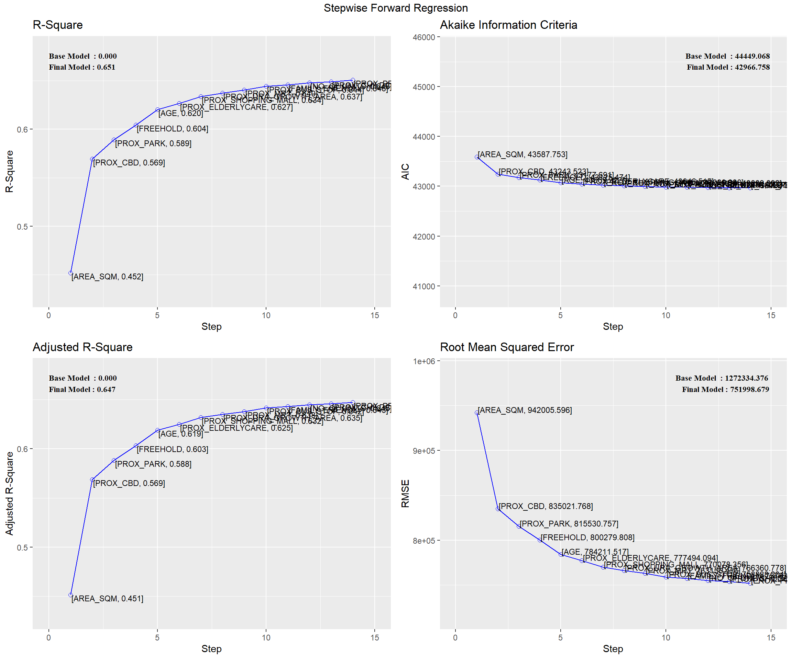
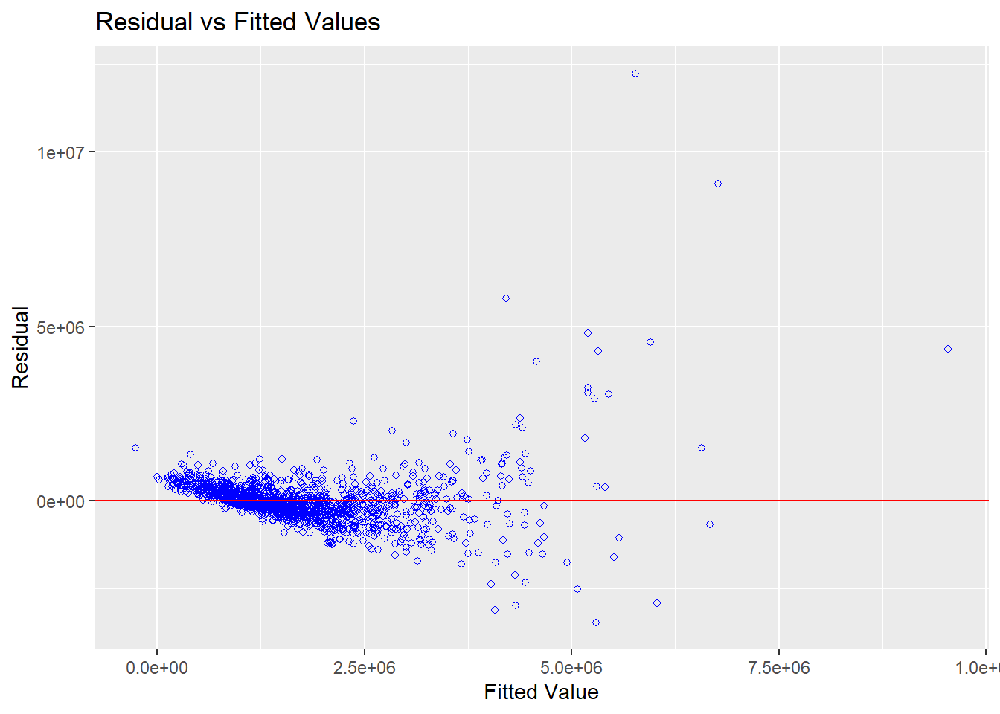

pacman::p_load(olsrr, corrplot, ggpubr,
sf, spdep, GWmodel, tmap,
tidyverse, gtsummary, ggstatsplot,
sfdep)In-class Exercise 7
1 Load and Install R Packages
2 Importing Data
condo_resale <- read_csv("data/aspatial/Condo_resale_2015.csv")Rows: 1436 Columns: 23
── Column specification ────────────────────────────────────────────────────────
Delimiter: ","
dbl (23): LATITUDE, LONGITUDE, POSTCODE, SELLING_PRICE, AREA_SQM, AGE, PROX_...
ℹ Use `spec()` to retrieve the full column specification for this data.
ℹ Specify the column types or set `show_col_types = FALSE` to quiet this message.condo_resale.sf <- st_as_sf(condo_resale,
coords = c("LONGITUDE", "LATITUDE"),
crs=4326) %>%
st_transform(crs=3414)mpsz = st_read(dsn = "data/geospatial", layer = "MP14_SUBZONE_WEB_PL")Reading layer `MP14_SUBZONE_WEB_PL' from data source
`C:\brigittatsai\ISSS626_AY2024-25_T1\In-class_Ex\In-class_Ex07\data\geospatial'
using driver `ESRI Shapefile'
Simple feature collection with 323 features and 15 fields
Geometry type: MULTIPOLYGON
Dimension: XY
Bounding box: xmin: 2667.538 ymin: 15748.72 xmax: 56396.44 ymax: 50256.33
Projected CRS: SVY21mpsz_svy21 <- st_transform(mpsz, 3414)3 Correlation Analysis
ggcorrmat(condo_resale[, 5:23])
4 Linear Regression Method
condo_mlr <- lm(formula = SELLING_PRICE ~ AREA_SQM +
AGE + PROX_CBD + PROX_CHILDCARE +
PROX_ELDERLYCARE + PROX_URA_GROWTH_AREA +
PROX_HAWKER_MARKET + PROX_KINDERGARTEN +
PROX_MRT + PROX_PARK + PROX_PRIMARY_SCH +
PROX_TOP_PRIMARY_SCH + PROX_SHOPPING_MALL +
PROX_SUPERMARKET + PROX_BUS_STOP +
NO_Of_UNITS + FAMILY_FRIENDLY +
FREEHOLD + LEASEHOLD_99YR,
data=condo_resale.sf)
summary(condo_mlr)
Call:
lm(formula = SELLING_PRICE ~ AREA_SQM + AGE + PROX_CBD + PROX_CHILDCARE +
PROX_ELDERLYCARE + PROX_URA_GROWTH_AREA + PROX_HAWKER_MARKET +
PROX_KINDERGARTEN + PROX_MRT + PROX_PARK + PROX_PRIMARY_SCH +
PROX_TOP_PRIMARY_SCH + PROX_SHOPPING_MALL + PROX_SUPERMARKET +
PROX_BUS_STOP + NO_Of_UNITS + FAMILY_FRIENDLY + FREEHOLD +
LEASEHOLD_99YR, data = condo_resale.sf)
Residuals:
Min 1Q Median 3Q Max
-3471036 -286903 -22426 239412 12254549
Coefficients:
Estimate Std. Error t value Pr(>|t|)
(Intercept) 543071.4 136210.9 3.987 7.03e-05 ***
AREA_SQM 12688.7 370.1 34.283 < 2e-16 ***
AGE -24566.0 2766.0 -8.881 < 2e-16 ***
PROX_CBD -78122.0 6791.4 -11.503 < 2e-16 ***
PROX_CHILDCARE -333219.0 111020.3 -3.001 0.002734 **
PROX_ELDERLYCARE 170950.0 42110.8 4.060 5.19e-05 ***
PROX_URA_GROWTH_AREA 38507.6 12523.7 3.075 0.002147 **
PROX_HAWKER_MARKET 23801.2 29299.9 0.812 0.416739
PROX_KINDERGARTEN 144098.0 82738.7 1.742 0.081795 .
PROX_MRT -322775.9 58528.1 -5.515 4.14e-08 ***
PROX_PARK 564487.9 66563.0 8.481 < 2e-16 ***
PROX_PRIMARY_SCH 186170.5 65515.2 2.842 0.004553 **
PROX_TOP_PRIMARY_SCH -477.1 20598.0 -0.023 0.981525
PROX_SHOPPING_MALL -207721.5 42855.5 -4.847 1.39e-06 ***
PROX_SUPERMARKET -48074.7 77145.3 -0.623 0.533273
PROX_BUS_STOP 675755.0 138552.0 4.877 1.20e-06 ***
NO_Of_UNITS -216.2 90.3 -2.394 0.016797 *
FAMILY_FRIENDLY 142128.3 47055.1 3.020 0.002569 **
FREEHOLD 300646.5 77296.5 3.890 0.000105 ***
LEASEHOLD_99YR -77137.4 77570.9 -0.994 0.320192
---
Signif. codes: 0 '***' 0.001 '**' 0.01 '*' 0.05 '.' 0.1 ' ' 1
Residual standard error: 755800 on 1416 degrees of freedom
Multiple R-squared: 0.652, Adjusted R-squared: 0.6474
F-statistic: 139.6 on 19 and 1416 DF, p-value: < 2.2e-165 olsrr Method
ols_regress(condo_mlr) Model Summary
-----------------------------------------------------------------------------
R 0.807 RMSE 750537.537
R-Squared 0.652 MSE 571262902261.223
Adj. R-Squared 0.647 Coef. Var 43.160
Pred R-Squared 0.637 AIC 42971.173
MAE 412117.987 SBC 43081.835
-----------------------------------------------------------------------------
RMSE: Root Mean Square Error
MSE: Mean Square Error
MAE: Mean Absolute Error
AIC: Akaike Information Criteria
SBC: Schwarz Bayesian Criteria
ANOVA
--------------------------------------------------------------------------------
Sum of
Squares DF Mean Square F Sig.
--------------------------------------------------------------------------------
Regression 1.515738e+15 19 7.977571e+13 139.648 0.0000
Residual 8.089083e+14 1416 571262902261.223
Total 2.324647e+15 1435
--------------------------------------------------------------------------------
Parameter Estimates
-----------------------------------------------------------------------------------------------------------------
model Beta Std. Error Std. Beta t Sig lower upper
-----------------------------------------------------------------------------------------------------------------
(Intercept) 543071.420 136210.918 3.987 0.000 275874.535 810268.305
AREA_SQM 12688.669 370.119 0.579 34.283 0.000 11962.627 13414.710
AGE -24566.001 2766.041 -0.166 -8.881 0.000 -29991.980 -19140.022
PROX_CBD -78121.985 6791.377 -0.267 -11.503 0.000 -91444.227 -64799.744
PROX_CHILDCARE -333219.036 111020.303 -0.087 -3.001 0.003 -551000.984 -115437.089
PROX_ELDERLYCARE 170949.961 42110.748 0.083 4.060 0.000 88343.803 253556.120
PROX_URA_GROWTH_AREA 38507.622 12523.661 0.059 3.075 0.002 13940.700 63074.545
PROX_HAWKER_MARKET 23801.197 29299.923 0.019 0.812 0.417 -33674.725 81277.120
PROX_KINDERGARTEN 144097.972 82738.669 0.030 1.742 0.082 -18205.570 306401.514
PROX_MRT -322775.874 58528.079 -0.123 -5.515 0.000 -437586.937 -207964.811
PROX_PARK 564487.876 66563.011 0.148 8.481 0.000 433915.162 695060.590
PROX_PRIMARY_SCH 186170.524 65515.193 0.072 2.842 0.005 57653.253 314687.795
PROX_TOP_PRIMARY_SCH -477.073 20597.972 -0.001 -0.023 0.982 -40882.894 39928.747
PROX_SHOPPING_MALL -207721.520 42855.500 -0.109 -4.847 0.000 -291788.613 -123654.427
PROX_SUPERMARKET -48074.679 77145.257 -0.012 -0.623 0.533 -199405.956 103256.599
PROX_BUS_STOP 675755.044 138551.991 0.133 4.877 0.000 403965.817 947544.272
NO_Of_UNITS -216.180 90.302 -0.046 -2.394 0.017 -393.320 -39.040
FAMILY_FRIENDLY 142128.272 47055.082 0.056 3.020 0.003 49823.107 234433.438
FREEHOLD 300646.543 77296.529 0.117 3.890 0.000 149018.525 452274.561
LEASEHOLD_99YR -77137.375 77570.869 -0.030 -0.994 0.320 -229303.551 75028.801
-----------------------------------------------------------------------------------------------------------------5.1 Multicolinearity
ols_vif_tol(condo_mlr) Variables Tolerance VIF
1 AREA_SQM 0.8601326 1.162611
2 AGE 0.7011585 1.426211
3 PROX_CBD 0.4575471 2.185567
4 PROX_CHILDCARE 0.2898233 3.450378
5 PROX_ELDERLYCARE 0.5922238 1.688551
6 PROX_URA_GROWTH_AREA 0.6614081 1.511926
7 PROX_HAWKER_MARKET 0.4373874 2.286303
8 PROX_KINDERGARTEN 0.8356793 1.196631
9 PROX_MRT 0.4949877 2.020252
10 PROX_PARK 0.8015728 1.247547
11 PROX_PRIMARY_SCH 0.3823248 2.615577
12 PROX_TOP_PRIMARY_SCH 0.4878620 2.049760
13 PROX_SHOPPING_MALL 0.4903052 2.039546
14 PROX_SUPERMARKET 0.6142127 1.628100
15 PROX_BUS_STOP 0.3311024 3.020213
16 NO_Of_UNITS 0.6543336 1.528272
17 FAMILY_FRIENDLY 0.7191719 1.390488
18 FREEHOLD 0.2728521 3.664990
19 LEASEHOLD_99YR 0.2645988 3.7793075.2 Variable Selection
condo_fw_mlr <- ols_step_forward_p(
condo_mlr,
p_val = 0.05,
details = FALSE # TRUE = multiple iterations
)plot(condo_fw_mlr)
5.3 Test for Non-Linearity
ols_plot_resid_fit(condo_fw_mlr$model) # no need to choose variable manually 
ols_plot_resid_hist(condo_fw_mlr$model)
ols_test_normality(condo_fw_mlr$model)Warning in ks.test.default(y, "pnorm", mean(y), sd(y)): ties should not be
present for the one-sample Kolmogorov-Smirnov test-----------------------------------------------
Test Statistic pvalue
-----------------------------------------------
Shapiro-Wilk 0.6856 0.0000
Kolmogorov-Smirnov 0.1366 0.0000
Cramer-von Mises 121.0768 0.0000
Anderson-Darling 67.9551 0.0000
-----------------------------------------------5.4 Testing for Spatial Autocorrelation
mlr_output <- as.data.frame(condo_fw_mlr$model$residuals) %>%
rename('FW_MLR_RES' = 'condo_fw_mlr$model$residuals')condo_resale_sf <- cbind(condo_resale.sf,
mlr_output$FW_MLR_RES) %>%
rename('MLR_RES' = 'mlr_output.FW_MLR_RES')tmap_mode("plot")tmap mode set to plottingtm_shape(mpsz) +
tmap_options(check.and.fix = TRUE) + # to fix geometric problems
tm_polygons(alpha = 0.4) +
tm_shape(condo_resale_sf) +
tm_dots(col = "MLR_RES",
alpha = 0.6,
style = "quantile")Warning: The shape mpsz is invalid. See sf::st_is_validVariable(s) "MLR_RES" contains positive and negative values, so midpoint is set to 0. Set midpoint = NA to show the full spectrum of the color palette.
condo_resale_sf <- condo_resale_sf %>%
mutate(nb = st_knn(geometry, k = 6,
longlat = FALSE),
wt = st_weights(nb,
style = "W"),
.before = 1)global_moran_perm(condo_resale_sf$MLR_RES,
condo_resale_sf$nb,
condo_resale_sf$wt,
alternative = "two.sided",
nsim = 99)
Monte-Carlo simulation of Moran I
data: x
weights: listw
number of simulations + 1: 100
statistic = 0.32254, observed rank = 100, p-value < 2.2e-16
alternative hypothesis: two.sidedThe global Moran’s I test for residual spatial autocorrelation shows that the p-value is less than 0.00000000000000022 , which is less then the alpha of 0.05. Hence, we will reject the null hypothesis that the residuals are randomly distributed (if it’s rejected, it’s not random)
5.5 Fixed Bandwidth
bw_fixed <- bw.gwr(formula = SELLING_PRICE ~ AREA_SQM + AGE +
PROX_CBD + PROX_CHILDCARE +
PROX_ELDERLYCARE + PROX_URA_GROWTH_AREA +
PROX_MRT + PROX_PARK + PROX_PRIMARY_SCH +
PROX_SHOPPING_MALL + PROX_BUS_STOP +
NO_Of_UNITS + FAMILY_FRIENDLY + FREEHOLD,
data = condo_resale_sf,
approach = "CV",
kernel = "gaussian", # must be consistent
adaptive = FALSE,
longlat = FALSE)Fixed bandwidth: 17660.96 CV score: 8.259118e+14
Fixed bandwidth: 10917.26 CV score: 7.970454e+14
Fixed bandwidth: 6749.419 CV score: 7.273273e+14
Fixed bandwidth: 4173.553 CV score: 6.300006e+14
Fixed bandwidth: 2581.58 CV score: 5.404958e+14
Fixed bandwidth: 1597.687 CV score: 4.857515e+14
Fixed bandwidth: 989.6077 CV score: 4.722431e+14
Fixed bandwidth: 613.7939 CV score: 1.378294e+16
Fixed bandwidth: 1221.873 CV score: 4.778717e+14
Fixed bandwidth: 846.0596 CV score: 4.791629e+14
Fixed bandwidth: 1078.325 CV score: 4.751406e+14
Fixed bandwidth: 934.7772 CV score: 4.72518e+14
Fixed bandwidth: 1023.495 CV score: 4.730305e+14
Fixed bandwidth: 968.6643 CV score: 4.721317e+14
Fixed bandwidth: 955.7206 CV score: 4.722072e+14
Fixed bandwidth: 976.6639 CV score: 4.721387e+14
Fixed bandwidth: 963.7202 CV score: 4.721484e+14
Fixed bandwidth: 971.7199 CV score: 4.721293e+14
Fixed bandwidth: 973.6083 CV score: 4.721309e+14
Fixed bandwidth: 970.5527 CV score: 4.721295e+14
Fixed bandwidth: 972.4412 CV score: 4.721296e+14
Fixed bandwidth: 971.2741 CV score: 4.721292e+14
Fixed bandwidth: 970.9985 CV score: 4.721293e+14
Fixed bandwidth: 971.4443 CV score: 4.721292e+14
Fixed bandwidth: 971.5496 CV score: 4.721293e+14
Fixed bandwidth: 971.3793 CV score: 4.721292e+14
Fixed bandwidth: 971.3391 CV score: 4.721292e+14
Fixed bandwidth: 971.3143 CV score: 4.721292e+14
Fixed bandwidth: 971.3545 CV score: 4.721292e+14
Fixed bandwidth: 971.3296 CV score: 4.721292e+14
Fixed bandwidth: 971.345 CV score: 4.721292e+14
Fixed bandwidth: 971.3355 CV score: 4.721292e+14
Fixed bandwidth: 971.3413 CV score: 4.721292e+14
Fixed bandwidth: 971.3377 CV score: 4.721292e+14
Fixed bandwidth: 971.34 CV score: 4.721292e+14
Fixed bandwidth: 971.3405 CV score: 4.721292e+14
Fixed bandwidth: 971.3408 CV score: 4.721292e+14
Fixed bandwidth: 971.3403 CV score: 4.721292e+14
Fixed bandwidth: 971.3406 CV score: 4.721292e+14
Fixed bandwidth: 971.3404 CV score: 4.721292e+14
Fixed bandwidth: 971.3405 CV score: 4.721292e+14
Fixed bandwidth: 971.3405 CV score: 4.721292e+14 Now we use the code below to calibrate the gwr model using fixed bandwidth and gaussian kernel
gwr_fixed <- gwr.basic(formula = SELLING_PRICE ~ AREA_SQM + AGE +
PROX_CBD + PROX_CHILDCARE +
PROX_ELDERLYCARE + PROX_URA_GROWTH_AREA +
PROX_MRT + PROX_PARK + PROX_PRIMARY_SCH +
PROX_SHOPPING_MALL + PROX_BUS_STOP +
NO_Of_UNITS + FAMILY_FRIENDLY + FREEHOLD,
data = condo_resale_sf,
bw = bw_fixed,
kernel = "gaussian", # must be consistent
adaptive = FALSE,
longlat = FALSE)gwr_fixed ***********************************************************************
* Package GWmodel *
***********************************************************************
Program starts at: 2024-10-14 22:20:09.241221
Call:
gwr.basic(formula = SELLING_PRICE ~ AREA_SQM + AGE + PROX_CBD +
PROX_CHILDCARE + PROX_ELDERLYCARE + PROX_URA_GROWTH_AREA +
PROX_MRT + PROX_PARK + PROX_PRIMARY_SCH + PROX_SHOPPING_MALL +
PROX_BUS_STOP + NO_Of_UNITS + FAMILY_FRIENDLY + FREEHOLD,
data = condo_resale_sf, bw = bw_fixed, kernel = "gaussian",
adaptive = FALSE, longlat = FALSE)
Dependent (y) variable: SELLING_PRICE
Independent variables: AREA_SQM AGE PROX_CBD PROX_CHILDCARE PROX_ELDERLYCARE PROX_URA_GROWTH_AREA PROX_MRT PROX_PARK PROX_PRIMARY_SCH PROX_SHOPPING_MALL PROX_BUS_STOP NO_Of_UNITS FAMILY_FRIENDLY FREEHOLD
Number of data points: 1436
***********************************************************************
* Results of Global Regression *
***********************************************************************
Call:
lm(formula = formula, data = data)
Residuals:
Min 1Q Median 3Q Max
-3470778 -298119 -23481 248917 12234210
Coefficients:
Estimate Std. Error t value Pr(>|t|)
(Intercept) 527633.22 108183.22 4.877 1.20e-06 ***
AREA_SQM 12777.52 367.48 34.771 < 2e-16 ***
AGE -24687.74 2754.84 -8.962 < 2e-16 ***
PROX_CBD -77131.32 5763.12 -13.384 < 2e-16 ***
PROX_CHILDCARE -318472.75 107959.51 -2.950 0.003231 **
PROX_ELDERLYCARE 185575.62 39901.86 4.651 3.61e-06 ***
PROX_URA_GROWTH_AREA 39163.25 11754.83 3.332 0.000885 ***
PROX_MRT -294745.11 56916.37 -5.179 2.56e-07 ***
PROX_PARK 570504.81 65507.03 8.709 < 2e-16 ***
PROX_PRIMARY_SCH 159856.14 60234.60 2.654 0.008046 **
PROX_SHOPPING_MALL -220947.25 36561.83 -6.043 1.93e-09 ***
PROX_BUS_STOP 682482.22 134513.24 5.074 4.42e-07 ***
NO_Of_UNITS -245.48 87.95 -2.791 0.005321 **
FAMILY_FRIENDLY 146307.58 46893.02 3.120 0.001845 **
FREEHOLD 350599.81 48506.48 7.228 7.98e-13 ***
---Significance stars
Signif. codes: 0 '***' 0.001 '**' 0.01 '*' 0.05 '.' 0.1 ' ' 1
Residual standard error: 756000 on 1421 degrees of freedom
Multiple R-squared: 0.6507
Adjusted R-squared: 0.6472
F-statistic: 189.1 on 14 and 1421 DF, p-value: < 2.2e-16
***Extra Diagnostic information
Residual sum of squares: 8.120609e+14
Sigma(hat): 752522.9
AIC: 42966.76
AICc: 42967.14
BIC: 41731.39
***********************************************************************
* Results of Geographically Weighted Regression *
***********************************************************************
*********************Model calibration information*********************
Kernel function: gaussian
Fixed bandwidth: 971.3405
Regression points: the same locations as observations are used.
Distance metric: Euclidean distance metric is used.
****************Summary of GWR coefficient estimates:******************
Min. 1st Qu. Median 3rd Qu.
Intercept -3.5988e+07 -5.1998e+05 7.6780e+05 1.7412e+06
AREA_SQM 1.0003e+03 5.2758e+03 7.4740e+03 1.2301e+04
AGE -1.3475e+05 -2.0813e+04 -8.6260e+03 -3.7784e+03
PROX_CBD -7.7047e+07 -2.3608e+05 -8.3600e+04 3.4646e+04
PROX_CHILDCARE -6.0097e+06 -3.3667e+05 -9.7425e+04 2.9007e+05
PROX_ELDERLYCARE -3.5000e+06 -1.5970e+05 3.1971e+04 1.9577e+05
PROX_URA_GROWTH_AREA -3.0170e+06 -8.2013e+04 7.0749e+04 2.2612e+05
PROX_MRT -3.5282e+06 -6.5836e+05 -1.8833e+05 3.6922e+04
PROX_PARK -1.2062e+06 -2.1732e+05 3.5383e+04 4.1335e+05
PROX_PRIMARY_SCH -2.2695e+07 -1.7066e+05 4.8472e+04 5.1555e+05
PROX_SHOPPING_MALL -7.2585e+06 -1.6684e+05 -1.0517e+04 1.5923e+05
PROX_BUS_STOP -1.4676e+06 -4.5207e+04 3.7601e+05 1.1664e+06
NO_Of_UNITS -1.3170e+03 -2.4822e+02 -3.0846e+01 2.5496e+02
FAMILY_FRIENDLY -2.2749e+06 -1.1140e+05 7.6214e+03 1.6107e+05
FREEHOLD -9.2067e+06 3.8073e+04 1.5169e+05 3.7528e+05
Max.
Intercept 112793548
AREA_SQM 21575
AGE 434201
PROX_CBD 2704596
PROX_CHILDCARE 1654087
PROX_ELDERLYCARE 38867814
PROX_URA_GROWTH_AREA 78515730
PROX_MRT 3124316
PROX_PARK 18122425
PROX_PRIMARY_SCH 4637503
PROX_SHOPPING_MALL 1529952
PROX_BUS_STOP 11342182
NO_Of_UNITS 12907
FAMILY_FRIENDLY 1720744
FREEHOLD 6073636
************************Diagnostic information*************************
Number of data points: 1436
Effective number of parameters (2trace(S) - trace(S'S)): 438.3804
Effective degrees of freedom (n-2trace(S) + trace(S'S)): 997.6196
AICc (GWR book, Fotheringham, et al. 2002, p. 61, eq 2.33): 42263.61
AIC (GWR book, Fotheringham, et al. 2002,GWR p. 96, eq. 4.22): 41632.36
BIC (GWR book, Fotheringham, et al. 2002,GWR p. 61, eq. 2.34): 42515.71
Residual sum of squares: 2.53407e+14
R-square value: 0.8909912
Adjusted R-square value: 0.8430417
***********************************************************************
Program stops at: 2024-10-14 22:20:10.631589 5.6 Converting SDF into sf dataframe
gwr_fixed_output <- as.data.frame(
gwr_fixed$SDF) %>%
select(-c(2:15))gwr_sf_fixed <- cbind(condo_resale_sf,
gwr_fixed_output)glimpse(gwr_sf_fixed)Rows: 1,436
Columns: 63
$ nb <nb> <66, 77, 123, 238, 239, 343>, <21, 162, 163, 19…
$ wt <list> <0.1666667, 0.1666667, 0.1666667, 0.1666667, …
$ POSTCODE <dbl> 118635, 288420, 267833, 258380, 467169, 466472…
$ SELLING_PRICE <dbl> 3000000, 3880000, 3325000, 4250000, 1400000, 1…
$ AREA_SQM <dbl> 309, 290, 248, 127, 145, 139, 218, 141, 165, 1…
$ AGE <dbl> 30, 32, 33, 7, 28, 22, 24, 24, 27, 31, 17, 22,…
$ PROX_CBD <dbl> 7.941259, 6.609797, 6.898000, 4.038861, 11.783…
$ PROX_CHILDCARE <dbl> 0.16597932, 0.28027246, 0.42922669, 0.39473543…
$ PROX_ELDERLYCARE <dbl> 2.5198118, 1.9333338, 0.5021395, 1.9910316, 1.…
$ PROX_URA_GROWTH_AREA <dbl> 6.618741, 7.505109, 6.463887, 4.906512, 6.4106…
$ PROX_HAWKER_MARKET <dbl> 1.76542207, 0.54507614, 0.37789301, 1.68259969…
$ PROX_KINDERGARTEN <dbl> 0.05835552, 0.61592412, 0.14120309, 0.38200076…
$ PROX_MRT <dbl> 0.5607188, 0.6584461, 0.3053433, 0.6910183, 0.…
$ PROX_PARK <dbl> 1.1710446, 0.1992269, 0.2779886, 0.9832843, 0.…
$ PROX_PRIMARY_SCH <dbl> 1.6340256, 0.9747834, 1.4715016, 1.4546324, 0.…
$ PROX_TOP_PRIMARY_SCH <dbl> 3.3273195, 0.9747834, 1.4715016, 2.3006394, 0.…
$ PROX_SHOPPING_MALL <dbl> 2.2102717, 2.9374279, 1.2256850, 0.3525671, 1.…
$ PROX_SUPERMARKET <dbl> 0.9103958, 0.5900617, 0.4135583, 0.4162219, 0.…
$ PROX_BUS_STOP <dbl> 0.10336166, 0.28673408, 0.28504777, 0.29872340…
$ NO_Of_UNITS <dbl> 18, 20, 27, 30, 30, 31, 32, 32, 32, 32, 34, 34…
$ FAMILY_FRIENDLY <dbl> 0, 0, 0, 0, 0, 1, 1, 0, 1, 1, 0, 0, 0, 0, 0, 0…
$ FREEHOLD <dbl> 1, 1, 1, 1, 1, 1, 1, 1, 1, 0, 1, 1, 1, 1, 1, 1…
$ LEASEHOLD_99YR <dbl> 0, 0, 0, 0, 0, 0, 0, 0, 0, 0, 0, 0, 0, 0, 0, 0…
$ MLR_RES <dbl> -1489099.55, 415494.57, 194129.69, 1088992.71,…
$ Intercept <dbl> 1580824.71, 1509406.28, 3583211.16, -444860.49…
$ y <dbl> 3000000, 3880000, 3325000, 4250000, 1400000, 1…
$ yhat <dbl> 2900355.0, 3499796.0, 3628135.3, 5359292.0, 13…
$ residual <dbl> 99644.96, 380204.01, -303135.30, -1109292.00, …
$ CV_Score <dbl> 0, 0, 0, 0, 0, 0, 0, 0, 0, 0, 0, 0, 0, 0, 0, 0…
$ Stud_residual <dbl> 0.58164609, 1.00012683, -0.88571524, -2.513378…
$ Intercept_SE <dbl> 3395011.7, 1352467.0, 1339841.1, 370353.7, 242…
$ AREA_SQM_SE <dbl> 1580.6464, 1221.7304, 1119.0686, 616.3396, 154…
$ AGE_SE <dbl> 15224.251, 9536.861, 7725.609, 5978.954, 9264.…
$ PROX_CBD_SE <dbl> 156762.55, 72009.21, 79937.75, 359165.60, 4780…
$ PROX_CHILDCARE_SE <dbl> 568613.2, 463408.9, 398867.7, 305347.0, 806691…
$ PROX_ELDERLYCARE_SE <dbl> 579655.1, 156842.5, 178208.6, 118670.9, 414128…
$ PROX_URA_GROWTH_AREA_SE <dbl> 422324.6, 191103.4, 125333.4, 366726.0, 563178…
$ PROX_MRT_SE <dbl> 606123.6, 560744.6, 334275.1, 271991.5, 454983…
$ PROX_PARK_SE <dbl> 399605.9, 435453.7, 374942.3, 216766.2, 469595…
$ PROX_PRIMARY_SCH_SE <dbl> 512060.9, 268609.3, 238048.9, 226860.0, 278753…
$ PROX_SHOPPING_MALL_SE <dbl> 482696.6, 239509.0, 142155.9, 153273.0, 376752…
$ PROX_BUS_STOP_SE <dbl> 1508504.5, 636969.8, 518721.9, 543058.9, 81911…
$ NO_Of_UNITS_SE <dbl> 806.8444, 266.4264, 234.1108, 324.0807, 353.41…
$ FAMILY_FRIENDLY_SE <dbl> 251502.9, 162760.6, 173178.3, 107958.2, 182177…
$ FREEHOLD_SE <dbl> 370362.8, 205263.5, 165806.1, 134885.6, 237553…
$ Intercept_TV <dbl> 0.4656316, 1.1160393, 2.6743554, -1.2011773, 0…
$ AREA_SQM_TV <dbl> 6.162087, 12.196149, 11.585038, 32.977013, 4.3…
$ AGE_TV <dbl> -0.62722500, -4.56438096, -3.26172325, -15.228…
$ PROX_CBD_TV <dbl> -0.26572481, -2.24375590, -3.39501541, 3.74802…
$ PROX_CHILDCARE_TV <dbl> 0.314199728, 0.596072954, -0.662701339, 1.8528…
$ PROX_ELDERLYCARE_TV <dbl> -0.61040359, 1.27422394, 3.26841613, 2.1260488…
$ PROX_URA_GROWTH_AREA_TV <dbl> -0.51714116, 0.30511964, -2.01288530, -4.31616…
$ PROX_MRT_TV <dbl> -0.68841147, -4.18708291, -2.84832358, -6.7173…
$ PROX_PARK_TV <dbl> -0.54239001, 0.92304803, 0.76850923, -2.802534…
$ PROX_PRIMARY_SCH_TV <dbl> 0.5897363, 2.7676171, 2.3052085, 13.1016452, 0…
$ PROX_SHOPPING_MALL_TV <dbl> 0.72864945, -1.32424806, -1.12186305, -0.69972…
$ PROX_BUS_STOP_TV <dbl> 0.79146959, 2.90629848, 2.87414548, 11.7683749…
$ NO_Of_UNITS_TV <dbl> 0.59112146, -0.80578975, 0.18687430, -0.615698…
$ FAMILY_FRIENDLY_TV <dbl> 0.235784421, 0.665313652, -0.356298596, 13.572…
$ FREEHOLD_TV <dbl> 0.86274374, 1.82752304, 0.94991015, 8.41398102…
$ Local_R2 <dbl> 0.9473297, 0.9136782, 0.8989196, 0.8994818, 0.…
$ geometry <POINT [m]> POINT (22085.12 29951.54), POINT (25656.…
$ geometry.1 <POINT [m]> POINT (22085.12 29951.54), POINT (25656.…